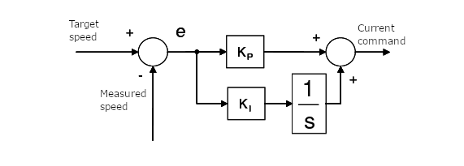
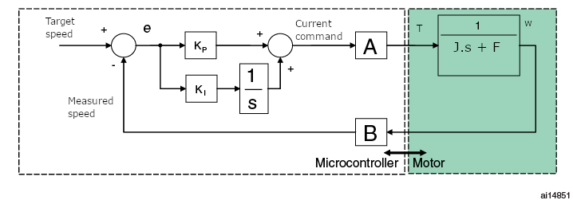
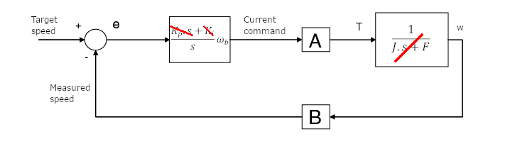
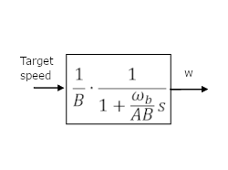

|
STM32 Motor Control SDK MCFW-6.4.1
Software Development Kit to build applications driving PMSM Motors with STM32
|
|
STM32 Motor Control SDK MCFW-6.4.1
Software Development Kit to build applications driving PMSM Motors with STM32
|
Prev: A priori determination of flux and torque current PI gains ↤| Table of Contents |↦ Next: Space vector PWM implementation
This section provides a criterion for the computation of the initial values of the speed regulator PI parameters ( \(K_i\) and \(K_p\)). This criterion is also used by the ST MC Workbench in their computation.
To calculate these starting values, it is required to know some characteristics of the motor (inertia \(J\), friction \(F\) and B-EMF constant \(K_e\)) and the electrical characteristics of the hardware (shunt resistor \(R_{Shunt}\) and the current sensing amplification network gain \(A_{op}\)).
The figure below shows the PI controller block diagram used for speed regulation.

The output of the Speed PID Controller is fed to the Current PID Controller, hence the output of the Speed PID Controller should be a current. Moreover, the Speed PI Controller only needs to be set on Iq, since Id is assumed to have no impact on speed level (Flux Weakening excluded).
For this analysis, the Current Control loop is neglected due to the high difference in speed the two are operating at. In other words, for Speed PI Controller gains estimation, \(Output Current = Target Current\)
The next figure shows the closed loop system in which the motor is modelled using an inertia-friction equivalent.
Block “A” is the proportionality constant between the software variable storing the current command (expressed in s16A) and the real torque applied to the motor (expressed in N.m). Likewise, block “B” is the the proportionality constant between the real mechanical speed (expressed in rad/s) and the software variable storing the mechanical speed (expressed in 01Hz).

The transfer functions of the two blocks :
We choose to insert \(K_p=J \cdot \omega_b\) and \(K_i = F \cdot \omega_b\). That way, a pole-zero cancellation is performed, and the open loop system becomes a stable pure integrator with a \(\omega_b\) bandwidth.

In this condition, the closed loop system is brought back to a first-order system, and the dynamics of the system can be assigned using a proper value of \(\omega_b\). In MCSDK, we fix \(\tau=\frac{J}{F}\) and \(\omega_b = \frac{0.5 \times 30}{\tau}\).
Note: The used \(\omega_b\) is based on a reference motor where \(\tau_{ref} = 0.5s\) and \(\omega_{b_{ref}} = 30 rad/s\)
The closed loop system can be resumed by :

However, the PI algorithm does not include the PI sampling time ( \(T\)) in the computation of the integral component. Referring to the following formula:
$$ k_i\int_{0}^{t}e\left(\tau\right)d\tau=k_iT\sum_{k=1}^{n}{e(kT)}=K_i\sum_{k=1}^{n}{e(kT)} $$
Since the integral part of the controller is computed as a sum of successive errors, it is required to include \(T\) in the calculation of \(K_i\).
The final formula can then be expressed as:
$$ K_{p}=J \cdot \frac{\omega_b}{AB} $$
$$ K_{i}=F \cdot \frac{\omega_b}{AB} T $$
using
$$ \frac{1}{AB}=\frac{2\pi}{10} \times \frac{R_{Shunt} \cdot A_{op} \cdot 2^{16}}{3.3} \times \sqrt{\frac{3}{2}} \frac{1000 \cdot 2\pi}{60K_e} $$
The parameters used in the PI algorithms must be integers; so the calculated \(K_i\) and \(K_p\) values must be expressed as fractions (dividend/divisor).
$$ K_{p} = \frac{K_{pg}}{K_{pd}} $$ $$ K_{i} = \frac{K_{ig}}{K_{id}} $$
Note: Divisors are always set to power of two values to ease computations at runtime.
Prev: A priori determination of flux and torque current PI gains ↤| Table of Contents |↦ Next: Space vector PWM implementation